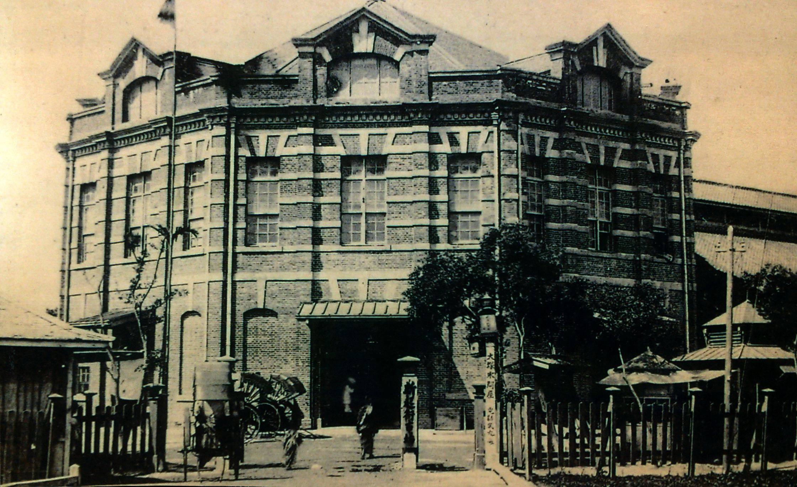
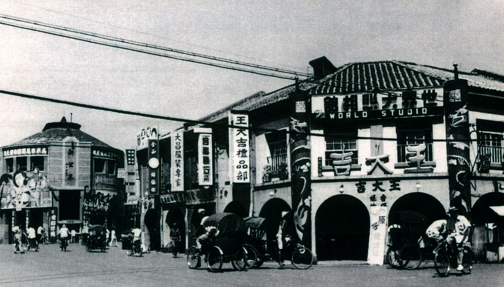

CITY MEMORY · LOCATION GAME
臺北老照片特展／城市影像尋訪計畫
城西尋影
TRACING THE LOST FRAMES
有些風景不曾離開。
只是藏進了時間裡。
從文獻館出發，跟著地圖走進萬華與西門町。當你抵達一處歷史現場，便能解鎖一張舊日影像；有動態影片的地點，還能讓往日街景重新播放。
00已解鎖影像06待尋找座標尚未啟用定位


06LOST
FRAMES
FRAMES
西門町・萬華NOW / THEN
01 / THE JOURNEY
尋影地圖
抵達街角，讓一張沉睡的照片重新醒來。
⌖萬華．西門町載入互動地圖中…
網路不通時可使用下方關卡清單
網路不通時可使用下方關卡清單
● 等待定位授權© OpenStreetMap contributors
YOUR FILM PASSPORT ▰▰▰▰
你的尋影進度
00/ 06
還沒開始尋影。先允許手機定位，再到地圖上的街角尋找第一張老照片。
◌
定位尚未啟動手機使用 HTTPS 開啟，允許瀏覽器存取位置。
展示模式：可預覽照片與影片，但不計入正式遊戲。
提醒：GPS 會受建築物與訊號影響。請站在人行道或安全的公共空間操作，不要為了定位走入車道。
02 / THE ARCHIVE
六段城市影格
每一張照片，都是曾經存在的日常。
✦
✦
✦
03 / THE FINAL SCENE
最後一幕，
回到故事的起點。
收集所有歷史影格後，回到臺北市立文獻館，讓這趟城西散步有一個完美的結尾。
◌
目前為試玩版本，僅示範完成畫面；正式領獎需要另外建置伺服器端一次性核銷，不能以截圖作為有效領獎證明。
尚未完成尋影任務還有 6 處影格等待解鎖